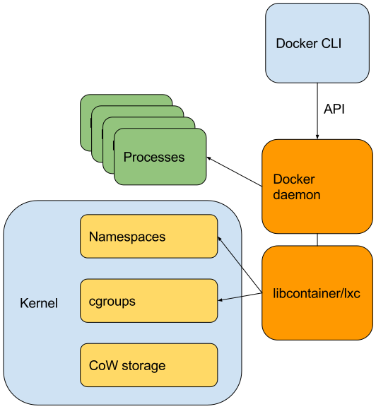

Docker from Scratch
Nati Cohen (@nocoot)
Avishai Ish-Shalom (@nukemberg)
Workshop goal
Understand how containers work in terms of kernel constructs:
- Namespaces
- CGroups
- CoW filesystem
Docker highlevel architecture

We're building part of libcontainer + daemon + cli
chroot
Maybe unpack an image too?
Namespaces
The namespaces API:
pivot_root
- Don't forget to mount private (recursively) the original root filesystem (why?)
- Finally, remove the old root directory
Doesn't work? new_root must be a mount!
CoW FTW!
Mount an overlay filesystem as the rootfs
- Use the extracted image rootfs dir as lowerdir
- Create an upperdir and workdir per container
Now we can pivot_root into the CoW mount
UTS namespace and hostname
PID namespace
unshare CLONE_NEWPID before forking a new process
Can also be done via clone
The CPU controller
Open a new cpu cgroup for each container. Set cpu.shares
Questions
- Are processes always throttled?
- How much is a share?
- How does this limit relate to scheduling priorities and classes?
The Memory controller
Open a new memory cgroup for each container. Configure the following:
- memory.limit_in_bytes
- memory.memsw.limit_in_bytes
- memory.kmem.limit_in_bytes
- memory.oom_control
Run stress and observe how the container behaves with(out) oom killer
exec
docker exec like functionality
Write the pid to a file, then use it's namespace references with setns
Devices whitelist controller
Internal NIC & port mappings